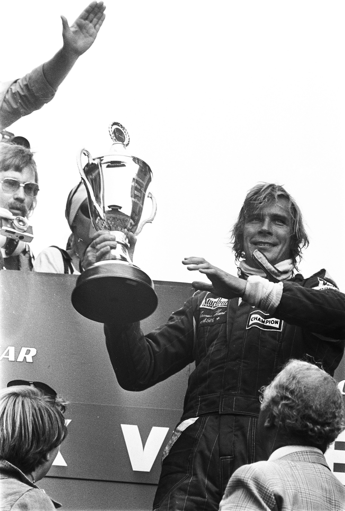

James Hunt
Sex is breakfast of champions !

Par Anefo / Croes, R.C — Gahetna in het Nationnal archief 928-7513, CC0, Lien
Who was he ?
James Hunt was a brilliant and charismatic though controversial Formula 1 driver during the 70's
Here is a brief summary of his life:
- Early Life: born in Belmont, Surrey, first learned to drive on a tractor on a farm. Went to see Minis race, which began his obsession with motor racing.
- Early Career: started off in a racing Mini, graduated to Formula Ford in 1968 then Formula 3 in 1969 and eventually meet Lord Hesketh.
- F1 Career: 1973 start in Formula 1 in Hesketh's team, join McLaren in 1976 and win the Championship. End his career in Wolf's team in 1979.
- Later Career: ended up as a commentator until 1993 among a few attempted comebacks and other projects
- Death: unfortunately at the age of 45 of a heart attack in his sleep.
Want to know more about this iconic driver ? You can visit this page. You can also watch the movie Rush